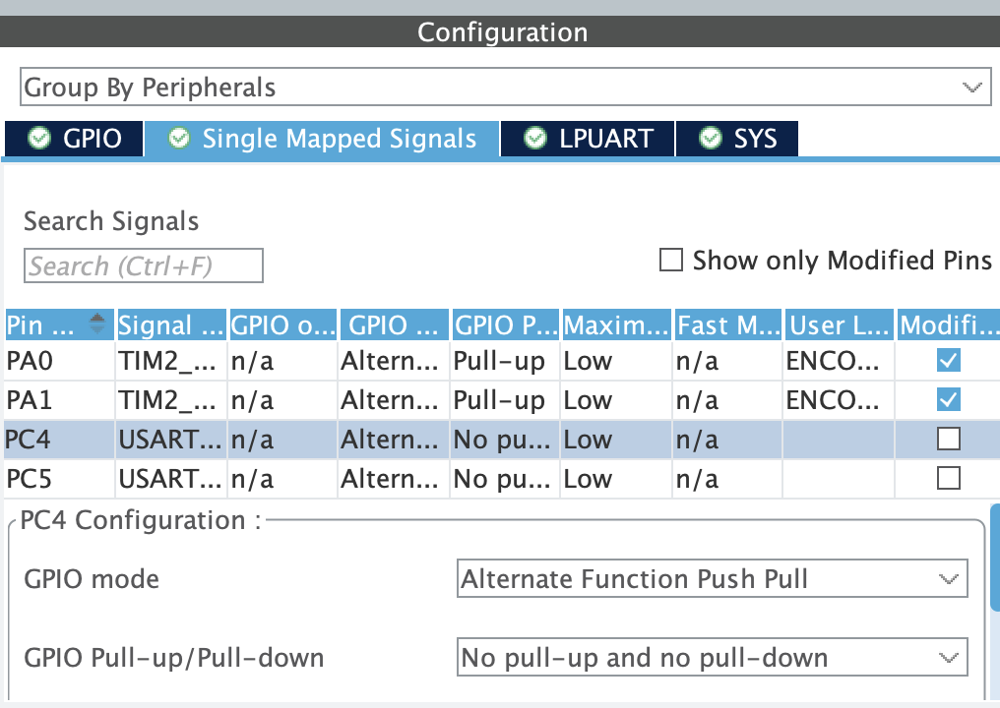
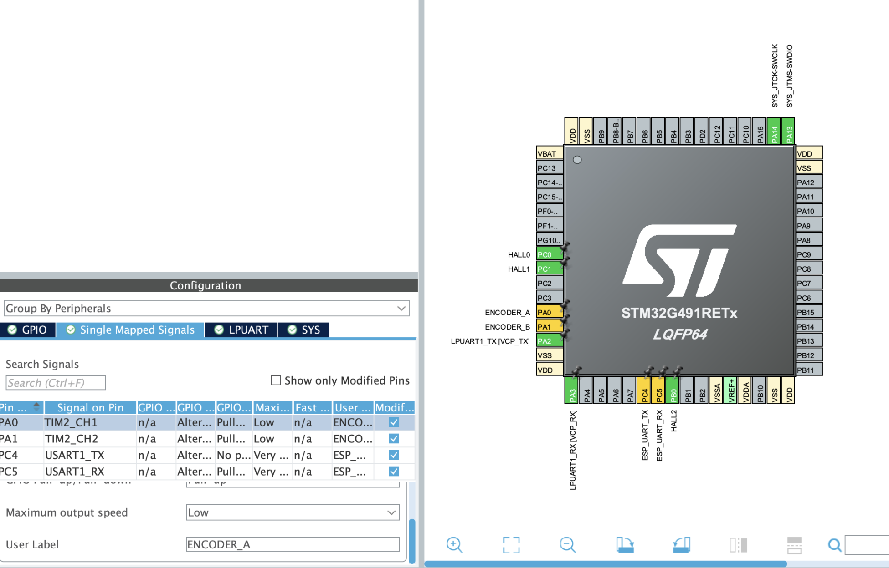
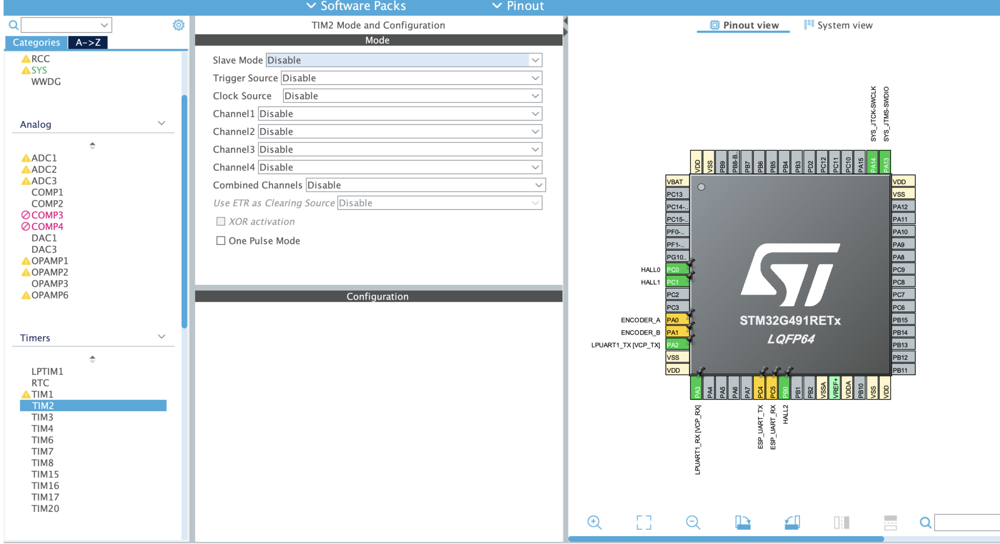
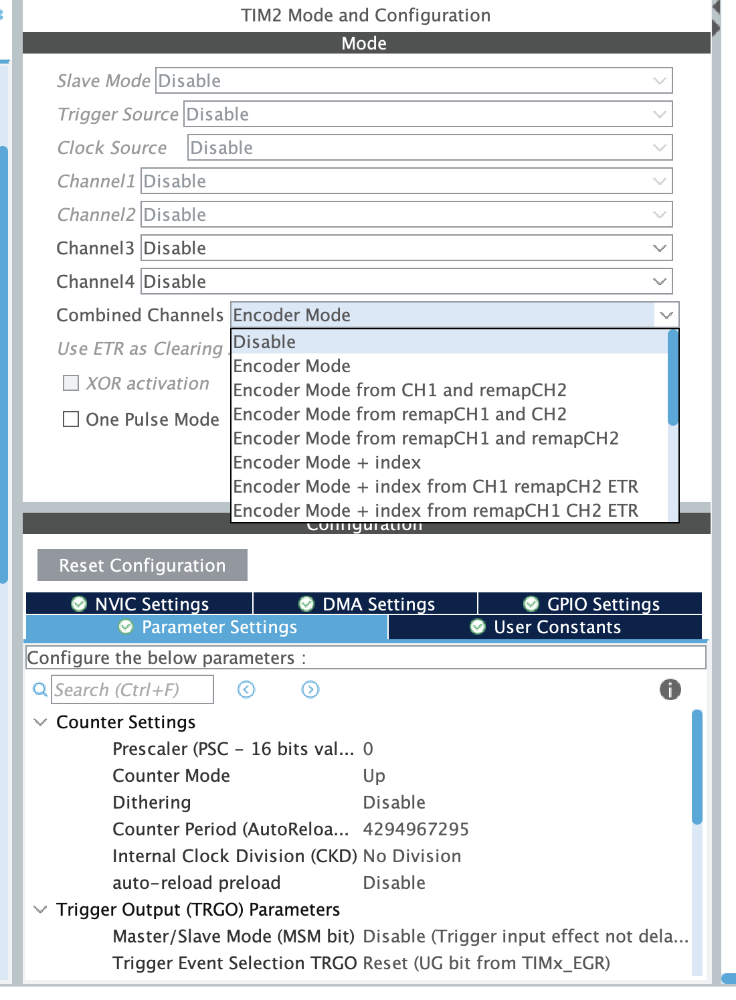
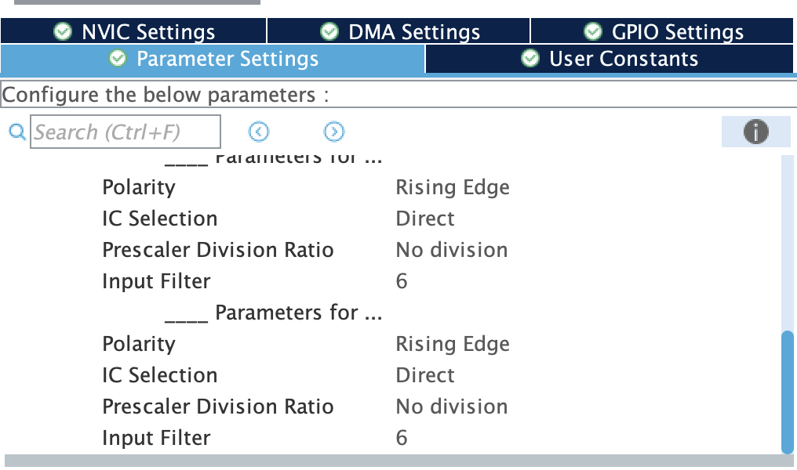
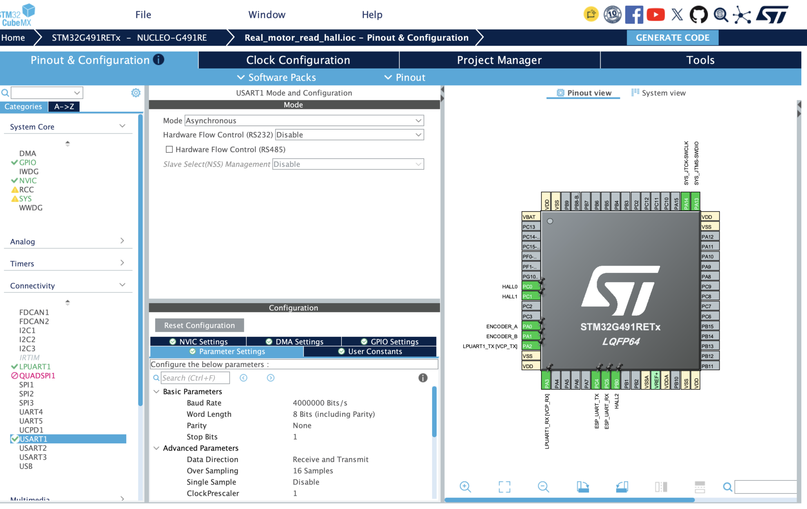
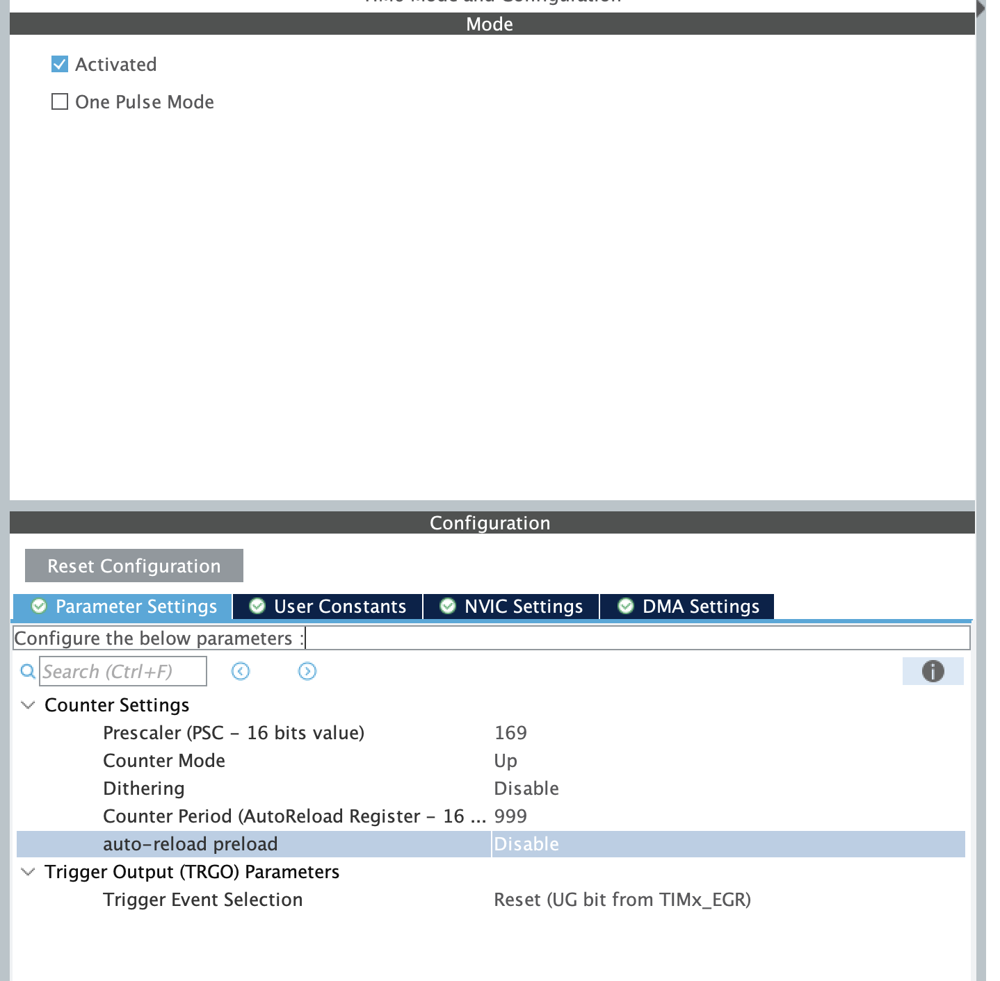

STM32–ESP32 HIL Akım PI Simülasyonu
1. Amaç ve sistemin görev paylaşımı
Motor sürücüsü bağlı değilken STM32 üzerindeki akım PI yazılımını çalıştırabilmek için ESP32, motorun elektriksel akım davranışını taklit eden haricî bir “plant” olarak kullanılacaktır. Hall sensörleri ve encoder gerçek motordan okunur; yalnızca ölçülen akım ESP32 tarafından modellenir.
STM32 Hall + RPM + akım + duty→Desktop UI
İki bağımsız UART kullanılması önemlidir: STM32–ESP32 kontrol trafiği, UI telemetrisinden ayrılır. Böylece UI’nin gecikmesi PI geri besleme zincirini doğrudan bozmaz.
2. Pin atamaları
| İşlev | STM32 pini / çevrebirim | Neden? |
|---|---|---|
| Hall 0 | PC0, GPIO Input, Pull-up | Rotor sektör bilgisinin birinci biti. |
| Hall 1 | PC1, GPIO Input, Pull-up | Rotor sektör bilgisinin ikinci biti. |
| Hall 2 | PB0, GPIO Input, Pull-up | Rotor sektör bilgisinin üçüncü biti. |
| Encoder A | PA0 = TIM2_CH1, Pull-up | TIM2 donanımsal quadrature sayacının A girişi. |
| Encoder B | PA1 = TIM2_CH2, Pull-up | Yön ve dört kat kenar sayımı için B girişi. |
| UI TX/RX | PA2/PA3 = LPUART1 | Nucleo ST-LINK Virtual COM Port üzerinden desktop UI. |
| ESP TX/RX | PC4/PC5 = USART1 | ESP32 ile ayrı, çift yönlü HIL veri hattı. |


Hall girişleri neden Pull-up?
Hall çıkışları açık-kollektör/açık-drain olabiliyorsa girişin boşta kararlı “1” seviyesinde kalmasını sağlar. Haricî kartta zaten uygun pull-up varsa dahili pull-up destekleyici olur; sürücü çıkışı push-pull ise elektriksel uyumluluk ayrıca doğrulanmalıdır. Hall pinleri bu aşamada periyodik okunur; EXTI kesmesi zorunlu değildir.
3. TIM2 — quadrature encoder

Combined Channels → Encoder Mode seçildi. “Remap” seçenekleri farklı pin yolları içindir; PA0 ve PA1 doğrudan CH1/CH2 kullanıldığı için sade Encoder Mode doğrudur. “Index” seçilmedi çünkü kullanılan encoder bağlantısında ayrı Z/index darbesi yoktur.

| TIM2 ayarı | Seçilen değer | Gerekçe |
|---|---|---|
| Encoder Mode | TI1 and TI2 | Her iki encoder kanalından yön ve konum bilgisi alınır; quadrature sayım yapılır. |
| Prescaler | 0 | Giriş sayımları bölünmeden sayılır; çözünürlük korunur. |
| Counter Period | 4294967295 | TIM2 32 bittir. Maksimum ARR, taşmalar arasındaki süreyi uzatır. Yazılım fark hesabını 32 bit sarılmayı dikkate alarak yapar. |
| Counter Mode | Up | Encoder arayüzünde gerçek yönü donanım belirler; temel sayaç ayarı Up bırakılır. |
| IC1 / IC2 Polarity | Rising Edge | Standart quadrature giriş polaritesi. Encoder yönü ters çıkarsa kablolar veya yazılım işareti düzeltilir. |
| IC Selection | Direct | CH1 ve CH2 kendi fiziksel girişlerinden okunur. |
| Input Prescaler | No division / DIV1 | Hiçbir geçerli encoder kenarı bölünmez. |
| Input Filter | 6 | Kablo/parazit kaynaklı çok kısa darbeleri süzer. Çok yüksek encoder frekansında test edilip gerekirse azaltılmalıdır. |
| Auto-reload preload | Disable | ARR çalışma sırasında değiştirilmediğinden preload gerekli değildir. |
| NVIC / DMA | Kapalı | Encoder değeri 1 ms görevinde doğrudan TIM2->CNT üzerinden okunacağından TIM2 kesmesi ve DMA gerekmez. |

encoder_counts_per_rev değeri mekanik bir turdaki gerçek TIM2 sayım adedi olmalıdır. Encoder kataloğu PPR veriyorsa TI1+TI2 quadrature kullanımında çoğunlukla dört kat sayım dikkate alınır. Yanlış CPR değeri, ölçülen RPM’yi aynı oranda yanlış yapar.
4. USART1 — STM32 ile ESP32 arasındaki HIL hattı
| Ayar | Değer | Neden? |
|---|---|---|
| Mode | Asynchronous | İki cihaz arasında ayrı clock hattı gerektirmeyen standart UART. |
| Baud rate | 4,000,000 | 1 kHz komut/geri bildirim paketlerini düşük aktarım gecikmesiyle taşımak için. |
| Frame | 8 data, None parity, 1 stop | ESP32 ile uyumlu standart 8N1 formatı. |
| Data Direction | Receive and Transmit | STM duty/RPM/sektör gönderir; ESP modellenmiş akımı geri gönderir. |
| Hardware Flow Control | Disable | RTS/CTS için ek pin kullanılmaz; akış protokol ve DMA ile yönetilir. |
| Oversampling | 16 | UART örnekleme dayanıklılığı; 170 MHz clock ile 4 Mbaud üretimi uygundur. |
| PC4 TX hızı | Very High | 4 Mbaud kenarlarının yeterince hızlı oluşması için. |
| PC5 RX Pull-up | Pull-up | ESP kapalı/ayrıkken RX hattının boşta rastgele seviye üretmesini önler. |

Fiziksel bağlantı
| STM32 NUCLEO-G491RE | ESP32 |
|---|---|
| PC4 / USART1_TX | UART RX (örneğin GPIO16) |
| PC5 / USART1_RX | UART TX (örneğin GPIO17) |
| GND | GND |
5. DMA — CPU’yu UART byte trafiğinden ayırmak
| İstek / kanal | Yön ve ayarlar | Rol |
|---|---|---|
| USART1_RX / DMA1 Channel 1 | Peripheral→Memory, Normal, Byte, MemInc Enable, PeriphInc Disable, High | ESP’den gelen akım paketini arabelleğe taşır. |
| USART1_TX / DMA1 Channel 2 | Memory→Peripheral, Normal, Byte, MemInc Enable, PeriphInc Disable, High | Duty/RPM/sektör komut paketini ESP’ye yollar. |
| LPUART1_TX / DMA1 Channel 3 | Memory→Peripheral, Normal, Byte, MemInc Enable, PeriphInc Disable, Medium | UI telemetrisini CPU’yu byte byte bekletmeden gönderir. |
Memory Increment, DMA’nın paket içindeki sonraki byte’a ilerlemesini sağlar. Peripheral Increment kapalıdır çünkü UART veri register adresi sabittir. Byte alignment, UART paketinin 8 bitlik yapısıyla eşleşir. Normal mode, bir paket tamamlanınca DMA’nın yazılım tarafından yeniden kurulmasına uygundur.
6. LPUART1 — desktop UI hattı
PA2/PA3 üzerindeki LPUART1, Nucleo’nun ST-LINK Virtual COM Port bağlantısını kullanır. UI telemetrisi 1 kHz hızında ve 4 Mbaud ile gönderilir. STM–ESP hattından ayrı olduğu için UI açık olmasa bile PI–plant döngüsü çalışabilir.
7. TIM6 — 1 kHz deterministik kontrol zamanı
TIM6 ekranında ayrı “Internal Clock” açılır menüsünün görünmemesi normaldir. Activated işaretlendiğinde CubeMX iç timer clock kaynağını etkinleştirir. .ioc kaydındaki VP_TIM6_VS_ClockSourceINT=Enable_Timer satırı bunu doğrular.
| Ayar | Değer | Neden? |
|---|---|---|
| Activated | Açık | TIM6 iç zaman tabanını etkinleştirir. |
| Prescaler (PSC) | 169 | 170 MHz timer clock, PSC+1=170 ile 1 MHz sayaç clock’una bölünür. |
| Counter Period (ARR) | 999 | 1 MHz, ARR+1=1000 sayım sonunda update üretir: 1 ms. |
| Counter Mode | Up | Temel periyodik zaman tabanı için. |
| One Pulse Mode | Kapalı | Timer tek atıştan sonra durmaz; sürekli 1 kHz çalışır. |
| Auto-reload preload | Kapalı | Periyot çalışma sırasında değiştirilmez. |
| DMA | Kapalı | Her update olayında bellek transferi gerekmez. |
| NVIC | TIM6_DAC interrupt açık | Her 1 ms’de kontrol görevini tetikler. |

8. NVIC öncelikleri
Cortex-M’de küçük sayı daha yüksek öncelik demektir. Önerilen dağılım aşağıdadır:
| Kesme | Preemption priority | Gerekçe |
|---|---|---|
| TIM6_DAC | 1 | 1 ms kontrol zamanının gecikmesini düşük tutar. |
| USART1 ve USART1 RX/TX DMA | 2 | HIL geri besleme paketleri UI’den daha önemlidir. |
| LPUART1 TX DMA | 3 | UI telemetrisi kontrol döngüsünü kesmemelidir. |
.ioc dosyasında TIM6, USART1 ve üç DMA kesmesinin preemption değeri hâlâ 0 görünüyordu. Aynı öncelikte çalışmaları sistemi bozmaz fakat yukarıdaki amaçlanan hiyerarşiyi sağlamaz. Kod üretmeden önce NVIC ekranında değerleri 1/2/3 olarak kontrol edin ve .ioc dosyasını kaydedin.9. Her 1 ms’de gerçekleşecek sıra
- STM32 üç Hall girişini okur ve geçerli sektörü/faz çiftini belirler.
- TIM2 sayaç farkından gerçek encoder RPM değerini hesaplar.
- ESP32’den en son gelen modellenmiş ölçüm akımını alır.
- Akım PI, referans ile ölçüm farkından duty üretir; limit ve anti-windup uygulanır.
- STM32 duty + gerçek RPM + sektör + sıra numarasını USART1 ile ESP32’ye yollar.
- ESP32 elektriksel modeli bir sonraki akım değerini hesaplayıp STM32’ye döndürür.
- STM32 Hall, RPM, ölçüm akımı, duty ve hata sayaçlarını LPUART1 ile UI’ye yollar.
Bu akışta doğal olarak yaklaşık bir örneklik geri besleme gecikmesi vardır. PI ayarları değerlendirilirken 1 ms örnekleme ve UART gecikmesi birlikte dikkate alınmalıdır.
10. Bu HIL testi neyi kanıtlar?
11. Kod üretmeden önce kısa kontrol listesi
- PA0/PA1: TIM2 Encoder Mode, TI1+TI2, filtre 6.
- TIM2 PSC=0, ARR=4294967295; TIM2 NVIC ve DMA kapalı.
- PC4/PC5: USART1 TX/RX, 4 Mbaud, 8N1, çift yönlü.
- USART1 RX ve TX DMA: Normal, Byte, MemInc açık, High.
- PA2/PA3: LPUART1 UI hattı, 4 Mbaud.
- LPUART1 TX DMA: Normal, Byte, MemInc açık, Medium.
- TIM6 Activated, PSC=169, ARR=999, One Pulse kapalı.
- TIM6_DAC NVIC açık; öncelikler 1/2/3 olarak doğrulandı.
- Project Manager → “Keep User Code when re-generating” açık.
.iockaydedildi; ardından Generate Code çalıştırılacak.